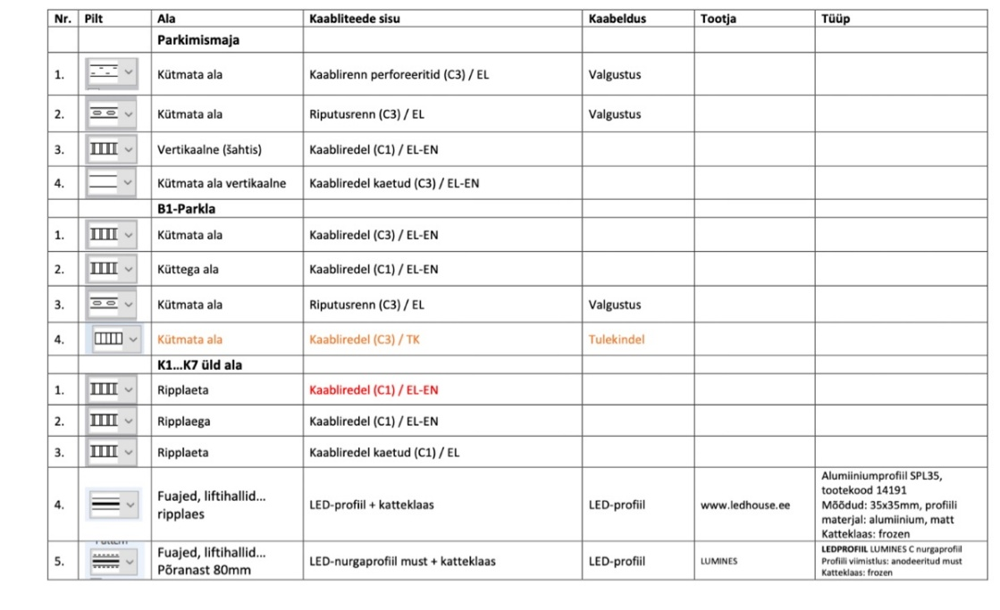
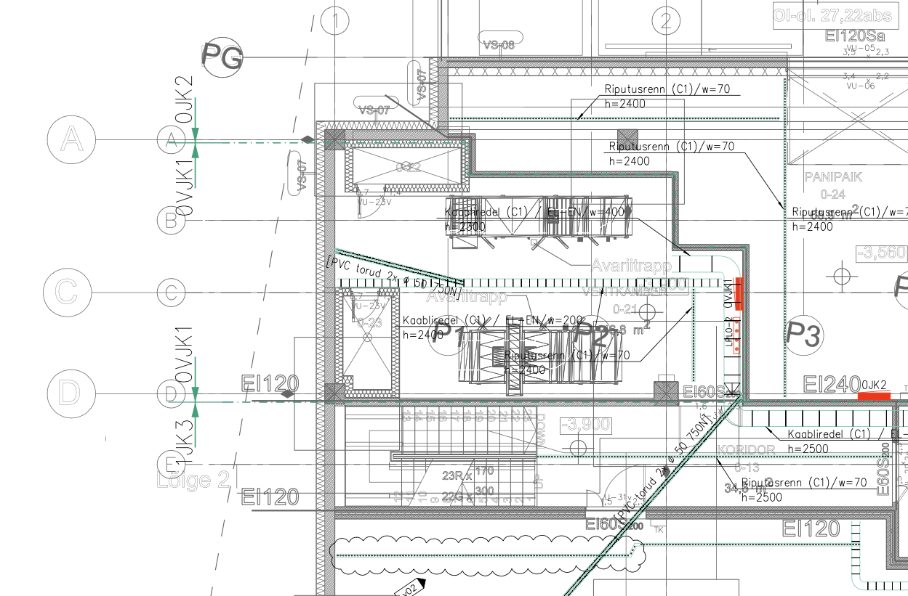

Kaabliteed
4.4. Kaabliteed (plaanid, tüübid, markeerimine)
Versioon: 1.0
Kuupäev: 15.04.2025
1. Käsitlusala
Käesolev kaart kirjeldab nõudeid kaabliteede tasapinnaplaanide koostamisele elektripaigaldise projektides (tugev- ja nõrkvool). See hõlmab nii riputatavaid (laealused, seintel) kui ka põrandaaluseid kaabliteid. Eesmärk on tagada jooniste selgus, informatiivsus ja vastavus standarditele ning heale tavale.
- Asjakohased EHR koodid: 5-1100 (Põrandaalused kaabliteed), 5-1200 (Riputatavad kaabliteed)
2. Seotud dokumendid ja viited
-
Standardid:
-
EVS 932:2017 Ehitusprojekt
-
Määrus \"Nõuded ehitusprojektile\"
-
EVS-EN ISO 5457: Jooniste vormistus
-
EVS-EN ISO 7200: Kirjanurk (ja teised vormistusstandardid)
-
EVS-EN ISO 3098, EVS-EN ISO 7083: Tekst joonistel (ja teised vormistusstandardid)
-
EVS-EN ISO 13567 (või vastav kehtiv standard): CAD kihid
-
Juhendid:
-
MKM Juhendmaterjal - Ehitusprojekti dokumentide digitaalse vormistamise nõuded
-
Käesoleva juhendi peatükid: 3 (Dokumentatsiooni vormistus), 7 (BIM Nõuded), Lisa X (Tingmärgid).
3. Üldnõuded Vormistusele
-
Mõõtkava: Üldjuhul 1:100. Kaabliteede ja kilpide teeninduspiirkondade üldplaanid võivad olla 1:200. Suure detailsusvajadusega alad (nt alajaamad) 1:50 Mõõtkava näidata kirjanurgas.
-
Formaat: Standardne ISO A-seeria (A3, A2, A1). Võib kasutada pikendatud formaate (A3L jne), kui kõrgus vastab standardile
-
Layout: Peab sisaldama graafilist osa, tingmärkide legendi ja standardset kirjanurka [ Image x.x.x]. Orienteeritus lugemiseks vasakult paremale.
-
Kirjanurk: Peab vastama EVS-EN ISO 7200 nõuetele ja sisaldama vähemalt juhendis määratletud miinimuminfot [Image x.x.x].
-
Fondid: Kasutada levinud platvormiüleseid fonte (nt ISOCPEUR, Arial). Teksti kõrgus (mõõtkavast sõltumata) 2.0-2.5 mm.
-
Kihid (Layers): Kasutada standardset kihisüsteemi (nt ISO 13567). Eraldada kihiti tugevvoolu (EL), nõrkvoolu (EN) ja tulekindlad (TK) kaabliteed.
-
Alusplaanid: Lisada Xref-ina (mitte kopeerida joonisesse).
-
Failinimed: Vastavalt MKM juhendile ja käesoleva juhendi peatükile 3.2.
-
Väljund: Vektorkujul PDF-fail, kus on säilinud kihtide info ja teksti selekteerimise võimalus.
4. Sisu Nõuded Staadiumite Kaupa
| Staadium | Sisu Nõuded |
|---|---|
| EP | Eelprojekt (Fookus: põhimõtted, ruumivajadus) - Näidata põhimagistraalide (nii horisontaalseid kui vertikaalseid) asukohti ja ligikaudseid mõõtmeid/ruumivajadus. - Määratleda elektri- ja nõrkvoolu tehnoruumide (sh kilbiruumid, serveriruumid) ning šahtide asukohad ja ligikaudsed suurused koostöös arhitektiga. - Näidata jaotuskeskuste (pea-, korruse-) põhimõttelisi asukohti. - Määratleda kaabliteede tüübid üldiselt (nt riputatavad, põrandaalused). |
| PP | Põhiprojekt (Fookus: detailsus, süsteemide eristamine, koordineerimine) - Riputatavad kaabliteed (EHR 5-1200): Näidata kõik kaabliredelid, -rennid, karbikud, tulekindlad teed. Eristada tüübid (nt kaetud/katmata) ja süsteemid (EL/EN/TK) mustri või värviga [Source 4312, Image 2]. Markeerida lõigud (Tüüp / Laius / Esialgne kõrgus) [Source 4313, Image 3]. Näidata ka lattliinid [Source 4324]. - Põrandaalused kaabliteed (EHR 5-1100): Näidata paigaldustorusid, põrandakarpe, põrandakanaleid, tõstetud põrandaaluseid teid. - Jaotuskeskused: Näidata täpsed asukohad, tüübid (TAVA/GEN/UPS värvidega) ja teeninduspiirkonnad. - Avad: Esitada avade ülesanne konstruktorile. Näidata vajalikud läbiviigud. - Tuleohutustsoonid: Vajadusel näidata TT-tsoonid. |
| TP | Tööprojekt (Fookus: ehituslik täpsus, paigaldusinfo) - Kõrgused ja Mõõdud: Näidata täpsed paigalduskõrgused (alumine serv) kõikidele kaabliteedele, sh kõrguse muutumisel. Lisada mõõdud põrandakarbid ja muude väljaviikude mõõtmed. Määratleda kilpide täpsed gabariidid ja teenindusalade mõõtmed. Üldjuhul mõõtahelaid seadmetele ei lisata, v.a erijuhtudel. - Kaabeldus: Näidata põhimagistraalide kaablipakid (cable pack) kaabliteedel. - Sõlmed ja Detailid: Vajadusel lisada spetsiifilisi paigaldussõlme või detaile, eriti keerukamate lahenduste või liitumiste puhul. - Avad: Näidata lõplikud ehituslikud avad, mis tuleb tekitada. |
5. Markeerimine ja Tähistus
-
Kaabliteed: Iga kaablitee lõik (eriti riputatav) peab olema varustatud viitega/tähisega, mis sisaldab vähemalt:
-
Kaablitee tüüp: (nt redel C1, renn C3, karbik K1, TK-tee jne) [Image x.x.x]
-
Süsteem: (nt EL, EN, TK - võib olla ka värvi/mustriga)
-
Laius (w): millimeetrites (nt w=300)
-
Paigalduskõrgus (h): Alumise serva absoluutkõrgus või kõrgus nullist (nt h=2400). Näidata kõrguse muutuskohtades.
-
Näide viitest: Redel (C1) / EL / w=300 / h=2400
-
Jaotuskeskused: Tähistada vastavalt projektis kasutatavale süsteemile (nt JK1, PK, UPS-JK2). Eristada värviga tava-, gen.- ja UPS-toite kilbid.
-
Tingmärgid: Kasutada standardseid või projektis defineeritud tingmärke. Kõik kasutatud tingmärgid peavad olema esitatud joonise legendis.
6. BIM Nõuded
-
Kaabliteede modelleerimisel järgida juhendi peatükis 7 toodud nõudeid (LOD vastavalt staadiumile, parameetrid, kihid, ristumiste kontroll).
-
Kaabliteed on oluline osa eriosade koordineerimisel ja ristumiste vältimisel BIM mudelis.
7. Näited
- Näide riputatavate kaabliteede markeerimisest [Image 3].
{width="5.089150262467192in" height="2.1166666666666667in"}
- Näide süsteemide eristamisest mustritega [Image 2].
{width="5.088888888888889in" height="3.1041666666666665in"}
- Näide kilbi teeninduspiirkonna ja tähistuse kohta [Image 5].
{width="5.447916666666667in" height="4.4375in"}
- Näide kaablipakkide kujutamisest (TP) [Image 6].
8. Märkused ja Head Tavad
-
Kaabliteede planeerimisel arvestada teiste tehnosüsteemide (KVJVK, vesi-kanal) paiknemisega ja ruumivajadusega. Koostöö teiste eriosade projekteerijatega on kriitilise tähtsusega.
-
Kaaluda kaabliteede täituvuse ja kandevõime arvutamist/hindamist keerukamate objektide puhul (eriti PP/TP staadiumis).
-
Tööprojektis võib olla otstarbekas näidata kaablite järjestus kaabliteedel suuremate magistraalide puhul.
-
Dokumenteerida ja kooskõlastada kõik avade ülesanded konstruktoriga õigeaegselt.